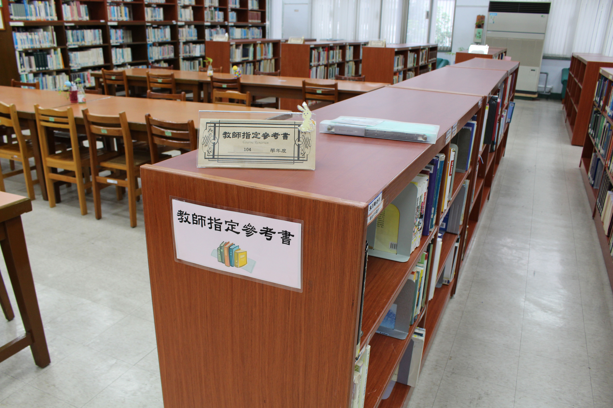
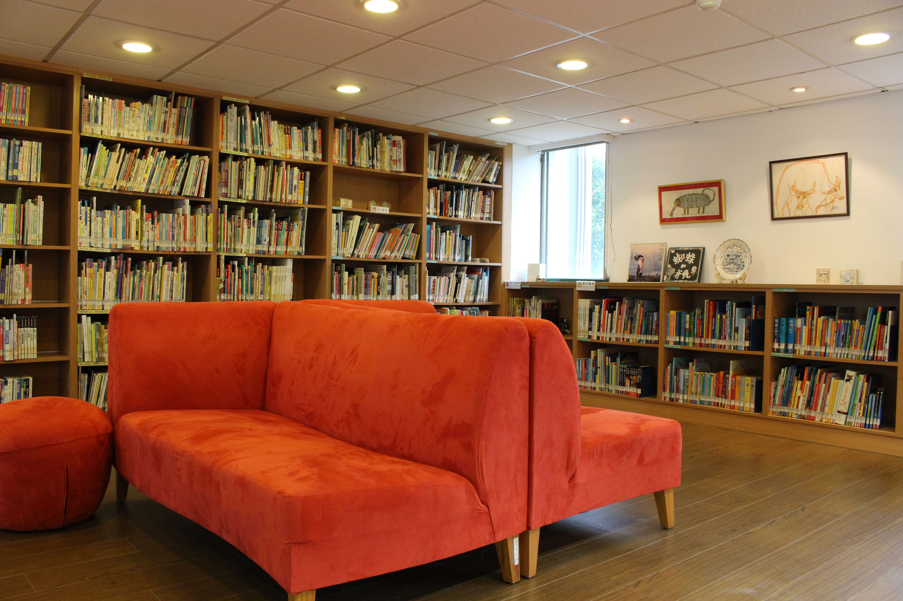
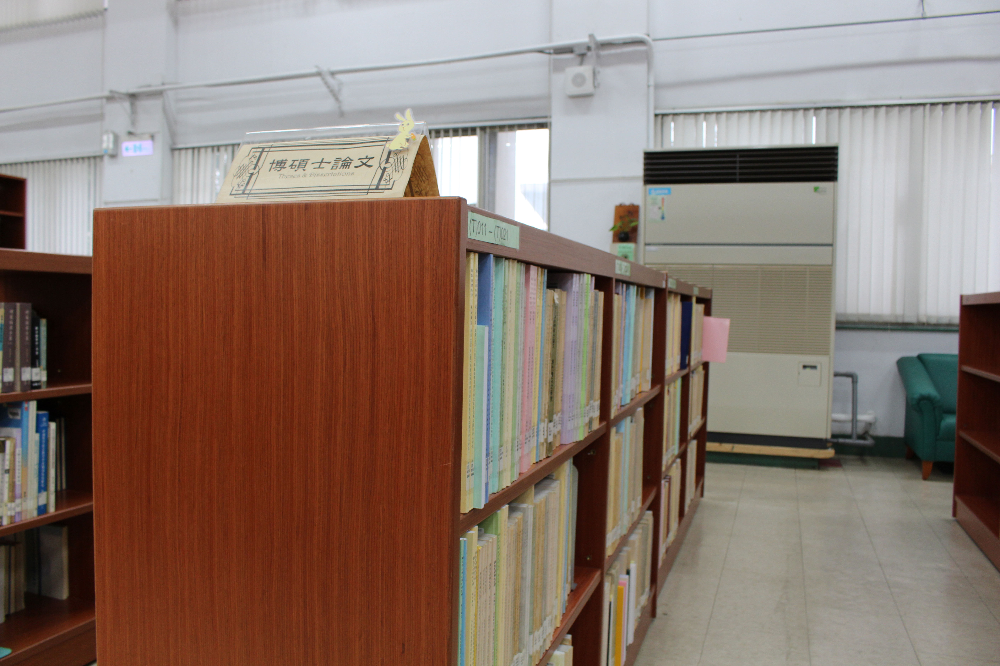
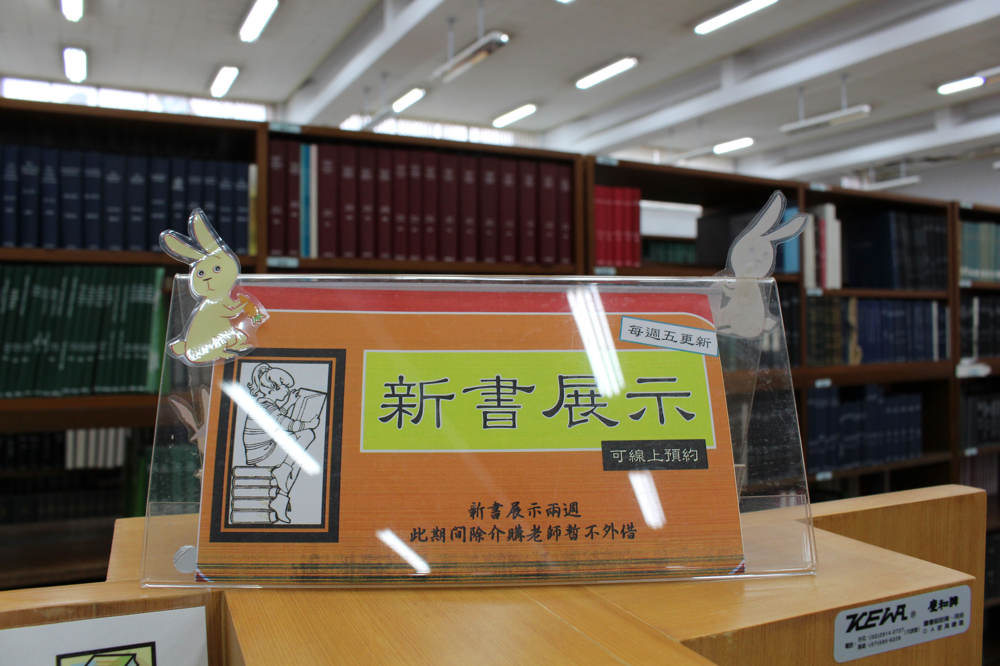
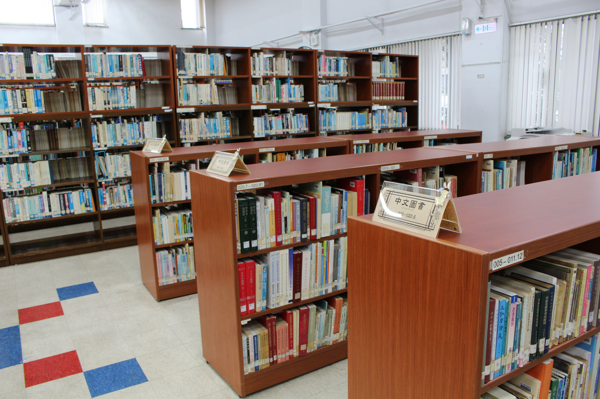
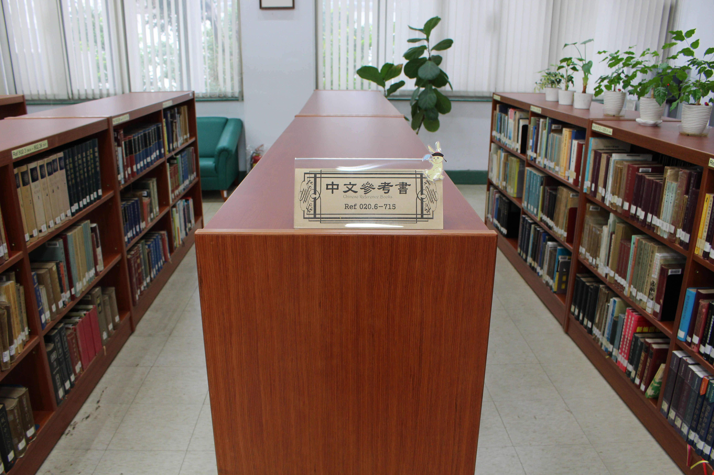
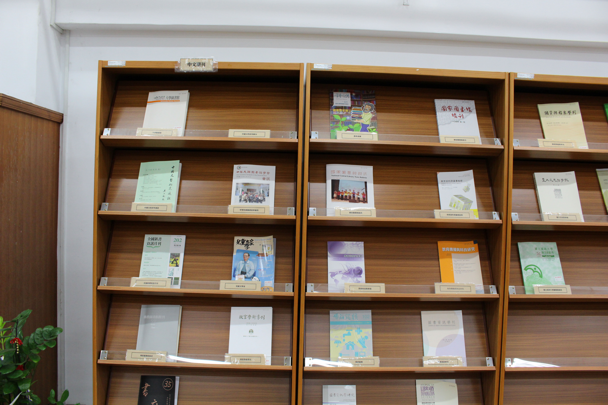
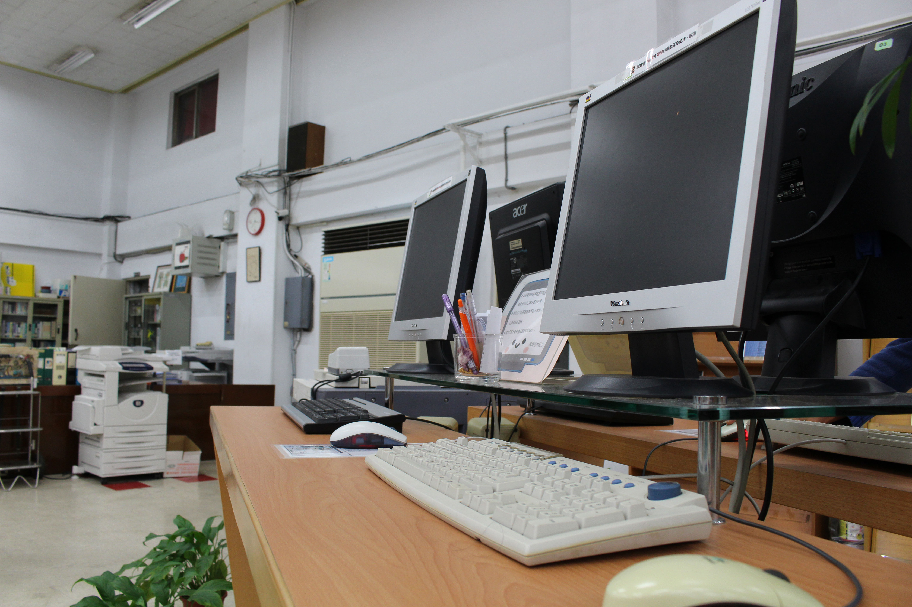

資源介紹
-
教師指定參考書區
你以為指定參考書的書都很難讀、很難懂嗎？
並非全然如此！指定參考書的書籍除了可以使你更瞭解你所學的科目外，更可以讓你掌握時代的脈動，例如：大數據、書目療法、系統設計等等，讓你可以在這瞬息萬變的社會中，快速掌握資訊。所以指定參考書區不只是可以讓你瞭解理論、應用所學，更可以使你在這茫茫的資訊大海中，當一位厲害的船夫，優游在這資訊大海上！
閱讀全文介紹
-
兒童讀物區
凱風卡瑪兒童書店創辦人陳培瑜女士這樣說到：「在台灣，成人閱讀繪本風氣並不盛行，大多人都將繪本視為小孩書。」其實，大人也需要一個做夢的花園。當我們漸漸長大之際，在社會現實的考驗下，容易失去小時候純真又好奇的自我，也丟了那天馬行空的想像力。透過圖畫書中的單純勇敢找回迷失的你，如同游珮芸教授說的「繪本，是孩子們通往另一個國度的鑰匙，也是帶領長大後的我們，飛向寬廣世界的那一雙翅膀。」
閱讀全文介紹
-
博碩士論文區
有聽說過專題研究嗎？是不是找不到研究主題啊？你知道這幾年的學長姐們研究了什麼題目嗎？那快來博碩士論文區吧！可以看見學術界最前端的研究成果，也可以從中尋找自己感興趣的研究領域喔。
閱讀全文介紹
-
新書展示區
在茫茫館藏中，新書展示區是讓你快速了解最近圖資相關新書的最好方式！如果將現有館藏比喻成一道鎖，則新書展示就是與鎖相輔相依缺一不可的一把鑰匙。使用新書展示區，讓你站在最新圖書資訊的尖端。
閱讀全文介紹
-
圖書區
來圖書館想必不只是為了做報告或考試，因此圖書區裡有各種主題種類的圖書可以滿足不同讀者的需求。走進圖書區，讀者可以與自己有興趣主題種類的圖書來場美妙的資訊偶遇。
閱讀全文介紹
-
參考書區
參考書區收藏各種特定主題之參考書，此類書籍多收錄事實或評論性資料，編排方式也與一般書籍不同。研究、讀書時遇到不理解的名詞？對於網路上資料的正確性有所懷疑？那來參考書區逛逛吧，說不定會有意想不到的收穫。
閱讀全文介紹
-
現期期刊區
現期期刊區提供的期刊能讓我們取得與圖書資訊學相關的最新知識，了解學者出版研究成果，對於研究生撰寫論文有很大的益處。此外，不同國家之期刊也能讓我們掌握各國圖書資訊學的脈動。
閱讀全文介紹
-
裝訂期刊區
期刊出版頻率高，內容豐富多元，是吸收新知的管道之一。而作為一研究者或是學生來說，過去的期刊內容為必需品，是學術研究以及撰寫報告的重要文獻資源。站在巨人的肩膀上才能看得更遠，若能好好利用豐富的期刊資料，想必讀者可以從中獲取許多寶貴的資訊，在學術課業的路途中如魚得水。
閱讀全文介紹
-
資訊檢索區
想找的書不知道在哪裡嗎？作業寫好了但是卻忘記列印出來了，可是計中好遠，該怎麼辦？報告用的講義數量不足，哪裡能夠在上課前讓我影印出來呢？這些問題，都可以在電子資源檢索區得到解決。
閱讀全文介紹